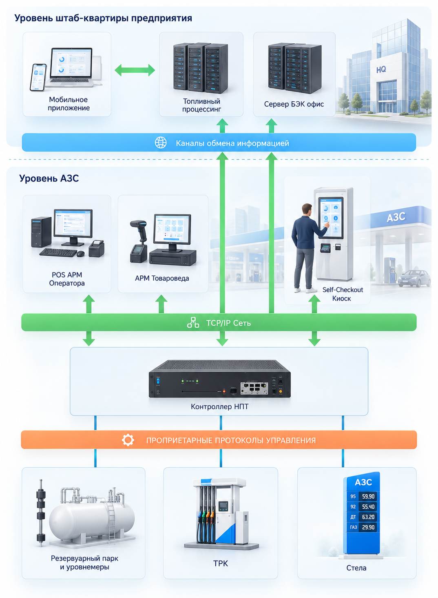
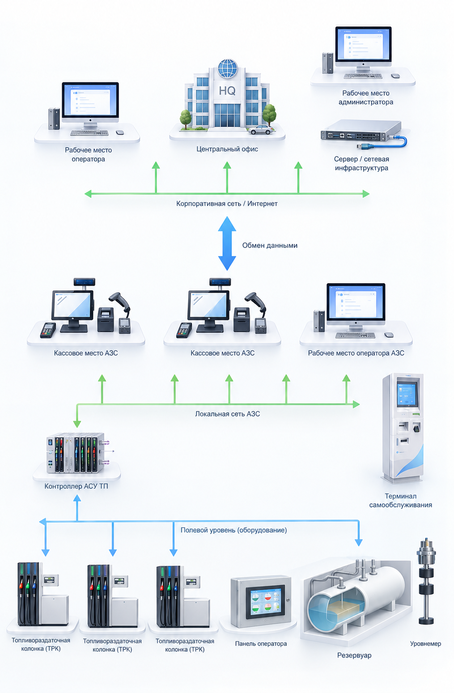
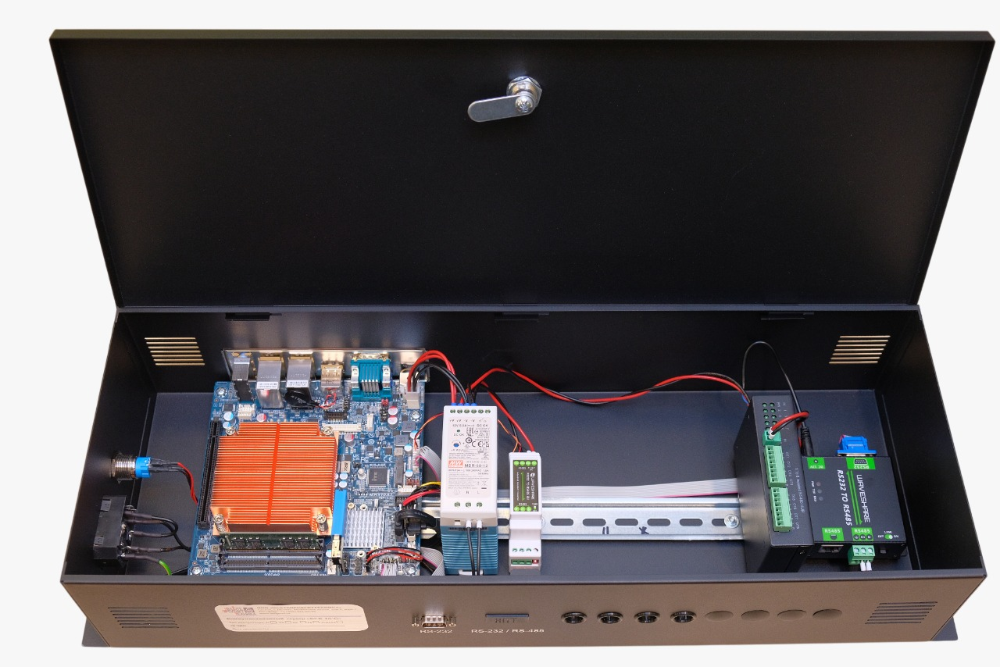
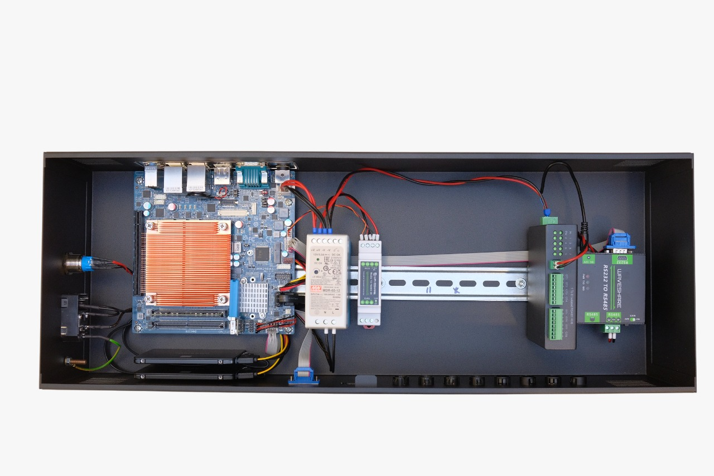
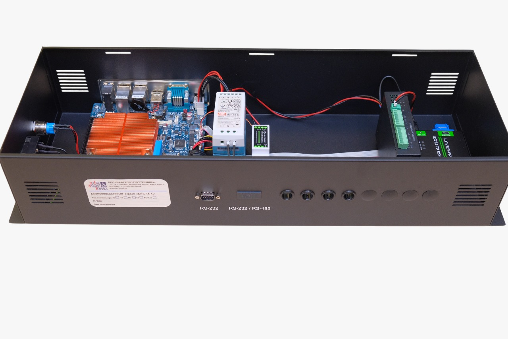
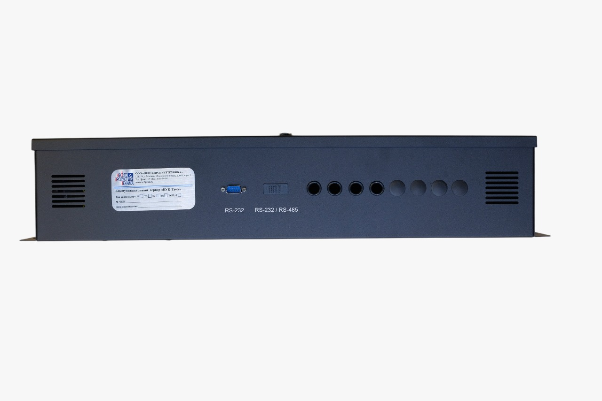
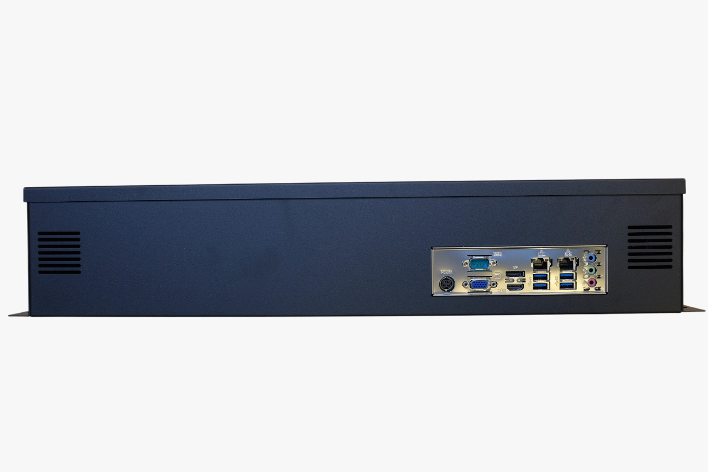
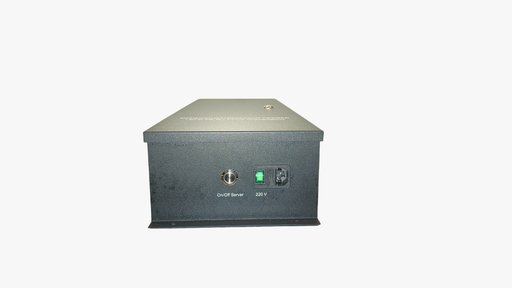

Главная → Автоматизация → БУК TS-G
Контроллер преобразует оригинальные протоколы ТРК, уровнемеров и стел цен в единый протокол управления по локальной сети — и параллельно ведёт собственную базу первичных данных о движении топлива, независимую от кассового ПО. Разработка и производство — ООО «Нефтепродукттехника», поставка, комплектация и пусконаладка — ИнтеллектКАЗС как дилер.
Где применяется
А система автоматизации должна видеть один протокол.
Колонки и уровнемеры разных лет и брендов — единая АСУ ТП без замены парка.
Отпуск топлива своему автопарку с первичным учётом по каждой транзакции.
Работа без персонала: телеметрия, удалённый контроль питания и процессов.
Один настенный корпус в техпомещении вместо стойки с преобразователями.
Совместимый API — сторонняя система автоматизации подключается как раньше.
Независимая от кассы база транзакций ТРК и показаний уровнемеров.
ПО в Едином реестре российских программ, реестровый № 4324.
Наращивание функций объекта без остановки продаж и без смены ТРК.
Зачем отдельный сервер
В базе данных контроллера хранится полная первичная информация от ТРК по всем заправкам, включая суммирующие электронные счётчики колонок, и полные данные уровнемера. Дополнительно ведётся глубокое логирование операций движения топлива и обмена с системой автоматизации. Расхождение между этими данными и кассовыми — то, что обычно ищет служба безопасности.
Архитектура
АСУ ТП топливного объекта — это три яруса: полевое оборудование, объектовый уровень и офис. Ярусы говорят на разных языках, и контроллер — единственная точка перевода между ними. Нажмите на схему, чтобы увеличить.

Снизу вверх схема читается так: технологическое оборудование → контроллер → локальная сеть объекта → каналы обмена → центральные серверы. Контроллер стоит точно на границе между оранжевой полосой проприетарных протоколов и зелёной TCP/IP-сетью: всё, что ниже него, разговаривает заводскими протоколами конкретного производителя, всё, что выше, — по Ethernet.

Та же система, но с точки зрения сетей и рабочих мест. Три шины: корпоративная сеть предприятия, локальная сеть объекта и полевой уровень. Контроллер АСУ ТП подключён к локальной сети АЗС и одновременно ко всему полевому оборудованию — поэтому при отказе связи с офисом объект продолжает отпускать топливо и накапливать данные локально.
Чем отличается от типового контроллера
Наведите на строку — сравнение.
Решение имеет открытый программный протокол взаимодействия (API), совместимый с контроллером автоматизации DOMS PSS5000, и подключается к системам автоматизации по «Doms POS Protocol» через Ethernet либо по оригинальному протоколу «БУК TS-G». Заменить контроллер можно без переписывания кассового ПО.
Как проходит поставка
Фиксируем состав оборудования: модели и количество ТРК и ГНК, протоколы управления, тип уровнемера, наличие стелы цен, применяемую систему автоматизации и каналы связи. От этого зависит набор интерфейсных модулей — их нельзя «докупить потом» без простоя.
Собираем конфигурацию: модули ТРК и уровнемеров на DIN-рейку, IP-модуль управления питанием, модуль стелы, объём памяти, RAID, тип охлаждения. Конфигурация поставляемых решений определяется под конкретного заказчика — типовой позиции «со склада» здесь нет.
Контроллер приходит в сборе с предустановленным ПО, паспортом и руководством по эксплуатации. Транспортирование и хранение — только в горизонтальном положении, без штабелирования; распаковка в отапливаемом помещении, первое включение после выдержки не менее 2 часов при завозе с морозa.
Крепление настенное, вертикальное, в отапливаемом помещении; питание 220 V через ИБП, при нестабильной сети — со стабилизатором. Пусконаладку и ввод в эксплуатацию выполняет персонал, прошедший обучение и сертифицированный производителем: иначе гарантия не действует.
Оперативная поддержка по вопросам ПНР и эксплуатации АСУ ТП, багтрекинг обращений, новые релизы ПО. Возможна доработка под подключение нового типа технологического оборудования и добавление функций в сжатые сроки.
Производитель
Система автоматизации АЗС «БУК TS-G» выведена на рынок в 1994 году, с 2009-го работает на Linux-платформе. Эксплуатируется более 30 лет на объектах ПАО «Татнефть», ТОО «Sinooil» (Казахстан, дочерняя компания PetroChina), ПАО «ЛУКОЙЛ» — с 2024 года, а также на частных сетях АЗС. Мы поставляем контроллер как дилер: комплектуем под объект, монтируем, вводим в эксплуатацию и сопровождаем, оставаясь единым ответственным по объекту вместе с остальным оборудованием АЗС.
Почему это решение
Более 30 лет на рынке РФ и СНГ: накоплен опыт и наработаны технические решения под нестандартные объекты.
В основе — только проверенные платформы и технологии с высоким уровнем защиты от ИТ-угроз.
Разворачивается и на одной АЗС, и на сети свыше 1000 объектов с местами хранения и перевалки нефтепродуктов.
Стек технологий сохраняет потенциал для модернизаций и доработок без смены платформы.
Анализ технических требований, обоснованная оценка сроков и стоимости внедрения до старта работ.
Предсказуемый TCO по всем статьям: лицензии, пусконаладка, сопровождение и развитие решения.
Конструктив
Настенный металлический корпус 640×220×120 мм с замком. Всё коммутационное хозяйство — на одной DIN-рейке.






Совместимость
Контроллер держит до 4 типов ТРК/ГНК и до 2 типов уровнемеров с разными протоколами одновременно. Возможна доработка под другое оборудование.
Интерфейсный модуль «Kienzle» на DIN-рейку
Штатный протокол GVR, мастер-дистрибьютор с 1997 года
Интерфейсный модуль «Dart Line»
Интерфейсный модуль «V11»
Оригинальный протокол производителя
Оригинальный протокол ТРК «Tokheim»
Два протокола на выбор под парк колонок
Приведение оригинальных протоколов к АЗТ 2.0
До 2 типов с разными протоколами одновременно
Экосистема «БУК TS-G»
Все решения работают на одной платформе: расширение функций не требует смены объектового оборудования.
Комплексный сквозной учёт ГСМ — приёмка, хранение, расход — на предприятиях с собственным автопарком и инфраструктурой нефтепродуктообеспечения: горнорудные предприятия, автобусные парки, аэропорты, морские порты. Сменный отчёт по ГСМ, ключевые показатели — в виде dashboard руководству в онлайн-режиме.
Централизованное управление бизнес-процессами сети подчинённых АЗК. Ставится на центральный сервер в офисе, объекты подключаются через защищённые каналы интернета; в сбытовых предприятиях развёртываются АРМ менеджеров.
Хранилище данных АЗК на СУБД Oracle с аналитическими надстройками верхнего уровня. Полная потранзакционная база всех событий на АЗК, рассчитанная на массивы от 2000 объектов и одновременную работу большого числа пользователей.
Промо-акции для покупателей: купоны действуют на стоимость топлива, сопутствующих товаров и услуг сети. Решение объединяет два уровня — АСУ ТП объекта и процессинг офиса.
Опция, которая окупается первой
Модуль устанавливается на ту же DIN-рейку внутри корпуса и управляется дистанционно. На объектах без персонала это единственный способ снять большую часть выездов по «зависшей» колонке.
Технические характеристики
Комплектация — под конфигурацию объекта. Наведите на строку.
Предприятие-изготовитель допускает внесение конструктивных изменений без ухудшения эксплуатационных свойств. Комплект поставки: контроллер в сборе с предустановленным ПО, руководство по эксплуатации, паспорт.
Частые вопросы
Модели и количество ТРК, тип уровнемера, система автоматизации, каналы связи. Вернёмся со спецификацией контроллера, ценой, сроком поставки и объёмом пусконаладки. Обычно в течение рабочего дня.